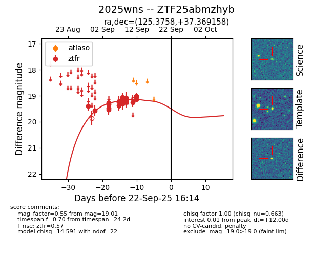
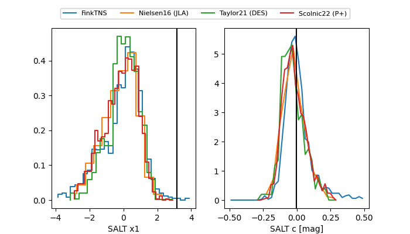

FINK: ZTF25abmzhyb
Lasair: ZTF25abmzhyb
ALeRCE: ZTF25abmzhyb
TNS: 2025wns
YSE: 2025wns
ZTF25abmzhyb (ztf,fink)
2025wns (tns,yse)
equatorial (ra, dec) = (125.3758,+37.36916)
galactic (l, b) = (184.2643,+33.20396)


last ztfr=19.01
22 ztfr detections